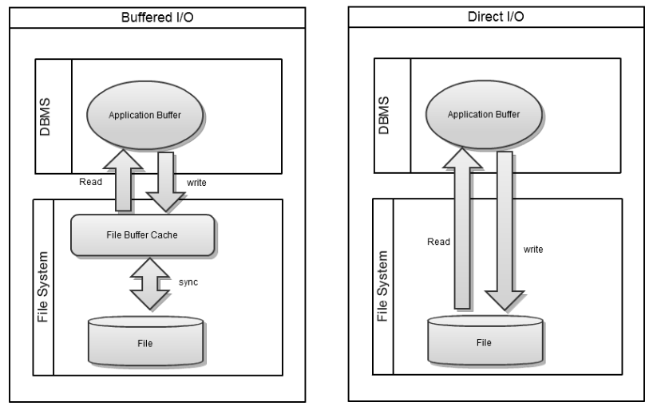

As previously mentioned, database performance is closely related to the disk I/O performance of storage. this chapter describes a few methods to increase the disk I/O performance of storage.
Changing the File Cache Configuration of OS
By configuring the appropriate file cache, the requirement for swap out the memory area used by ALTIBASE is suppressed. It is recommended to minimize the subsequent phenomenon.
This file cache is a kind of system buffer managed at the operating system level in order to solve the bottleneck caused by the difference in speed between the main memory device and the auxiliary memory device. This file cache is managed by a policy to each operating system, but has a direct correlation with the swap policy in common.
Swapping itself has the usefulness of being able to handle larger application programs or data files than the main memory. However, in systems where long-term resident application programs such as DBMS are operated, the response time of the DBMS becomes irregular due to the disk I/O delay time of the operating system layer due to swapping, or in the worst case, a phenomenon such as a hang.
Therefore, in order to guarantee a consistent response time of ALTIBASE, it is recommended to configure the related file cache and swap kernels in advance so that swap does not occur as least as possible.
It is recommended to refer to the documentation below to properly configure file cache values.
- HPUX Setup Guide for Altibase
- AIX Setup Guide for Altibase
- Solaris Setup Guide for Altibase
- Linux Setup Guide for Altibase
Direct I/O
The file system of OS has a structure that improves access performance to a slow disk by caching the file blocked accessed when accessing a file by placing a memory area called File Buffer Cache, as in the form of buffered I/O in the figure below.

However, if data is cache directly at the application level like a DBMS, there may be an overhead of moving data from disk to the file buffer cache and back to the DB's own buffer cache. This is called "double copying" and in this case, it may result in more CPU and memory usage.
In order for ALTIBASE to I/P data files and log files with the Direct I/O, the following ALTIBASE properties must be configured.
- DIRECT_IO_ENABLED = 1 # 0: Buffered I/O, 1:Direct I/O
- DATABASE_IO_TYPE = 1 # 0: Buffered I/O, 1:Direct I/O
- LOG_IO_TYPE = 1 # 0: Buffered I/O, 1:Direct I/O
Some OS or file systems may not support Direct I/O for files or may not support Direct I/O at the application level. In addition, some operations are required to use Direct I/O.
In this case, the file system must be mounted using a specific option as in the example below.
OS | File System | Required Action |
|---|---|---|
Solaris | UFS | None |
VxFS | mount with convosync=direct | |
ZFS | Direct I/O is not supported | |
HP | HFS | None |
JFS | None | |
VxFS | mount with convosync=direct | |
AIX | JFS | mount with use -o dio |
VxFS | mount with convosync=direct | |
Windows | NTFS | None |
FAT32 | None | |
Linux(2.4 > K ) | Ext2/Ext3/Ext4 | None |
When it is advantageous to use Direct I/O
If the size of the database is larger than the size of the system memory and the size of the disk buffer is large, it may be advantageous to use Direct I/O. For example, in the case of a SAN device, there are cases that support a large capacity buffer by itself. In this case, Direct I/O may be advantageous.
In a DB where the size of the DB is large and a large amount of modification work occurs frequently, a large amount of disk I/O occurs during the checkpoint process. At this time, CPU usage and memory usage may increase rapidly due to the cost of double copying to the OS file cache and the DB buffer cache.
In this case, using the Direct I/O can be a solution to this problem.
When it is advantageous to use buffered I/O
In most cases, when using a local disk, using a buffered I/O method is more advantageous in terms of performance than using a direct I/O.
The buffer I/O of the OS can read in multi-block and prefetch the required disk page to improve the speed of I/O, so performance tends to improve when using the buffer I/O.
Page Size
In ALTIBASE, the term page size is used instead of the block size. The page size of ALTIBASE has a fixed value of 32K per page for memory tables and 8K per page for disk tables and cannot be changed.
In most cases, other DB vendor products may adjust the size of the DB page size when creating the DB in consideration of the block size of the OS for the file I/O efficiency of the DB, but ALTIBASE has a fixed page size and it cannot be changed. In addition, ALTIBASE does not recommend changing the OS block size to match the DB page size.
There is no case of performance degradation due to a mismatch between ALTIBASE page size and OS block size.
{kind=link}